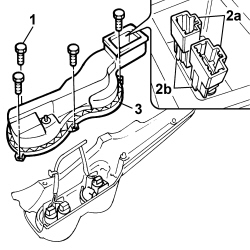
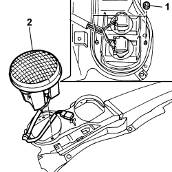
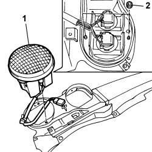
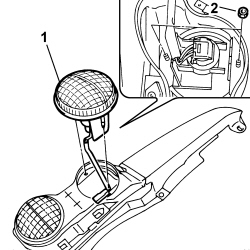
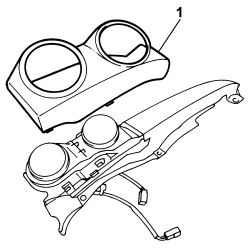

5540A46 TAIL LIGHT (ONE) LH OR RH DISMANTLE AND REBUILD AT BENCH
- Path
- Procedures > 55 ELECTRICAL EQUIPMENT > 5540 EXTERIOR LIGHTING > 5540A LIGHTING > 5540A46 TAIL LIGHT (ONE) LH OR RH DISMANTLE AND REBUILD AT BENCH
- Kind
- repair procedure (removal / refitting; the operation number is the code)
- Applies to
- engines: 1.3 JTD 16v; all production periods; only with equipment: SUV
- Interactive page
- https://sloeber94.github.io/elrnDB-fPnd/en/#/169002220
Applies to: engines: 1.3 JTD 16v; all production periods; only with equipment: SUV
 Removing
Removing
 Refitting
Refitting1. Undo the retaining bolts.
2. Release connectors (2a) from anchorage brackets (2b).
3. Remove the rear cover.

Applies to: engines: 1.3 JTD 16v; all production periods; only with equipment: SUV
1. Undo the clips and remove the headlamp frame.

Applies to: engines: 1.3 JTD 16v; all production periods; only with equipment: SUV
1. Undo the retaining nuts.
2. Remove the brake/side light.
Applies to: engines: 1.3 JTD 16v; all production periods; only with equipment: SUV
1. Undo the retaining nuts.
2. Remove the tail-light:
- Turn signal/rear foglamp if working on the left tail-light assembly;
- Turn signal/reversing if working on the right tail-light assembly;

Applies to: engines: 1.3 JTD 16v; all production periods; only with equipment: SUV
Refitting
Removing1. Position the light in the housing.
- Turn signal/rear foglamp if working on the left tail-light assembly;
- Turn signal/reversing if working on the right tail-light assembly;
2. Tighten the retaining nuts.

Applies to: engines: 1.3 JTD 16v; all production periods; only with equipment: SUV
1. Position the brake/sidelight in the housing.
2. Tighten the retaining nuts.

Applies to: engines: 1.3 JTD 16v; all production periods; only with equipment: SUV
1. Fit the tail-light frame in its seat and secure with the clips.

Applies to: engines: 1.3 JTD 16v; all production periods; only with equipment: SUV
1. Fit rear cover (1a) and secure connectors (1b) to anchorage brackets (1c).
2. Tighten the fixing bolts.